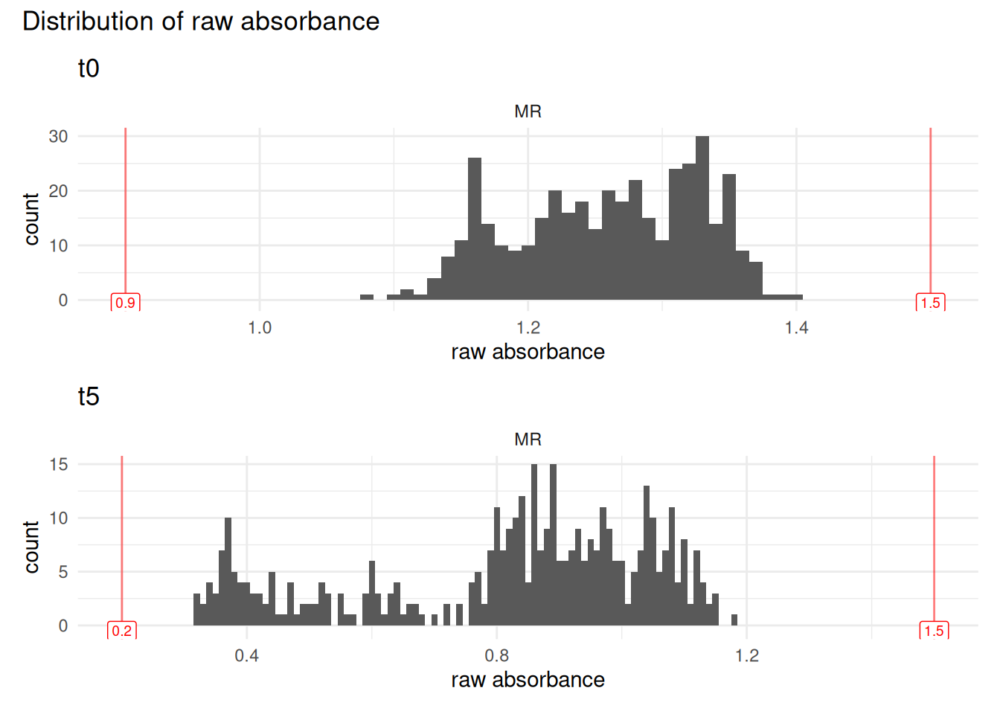
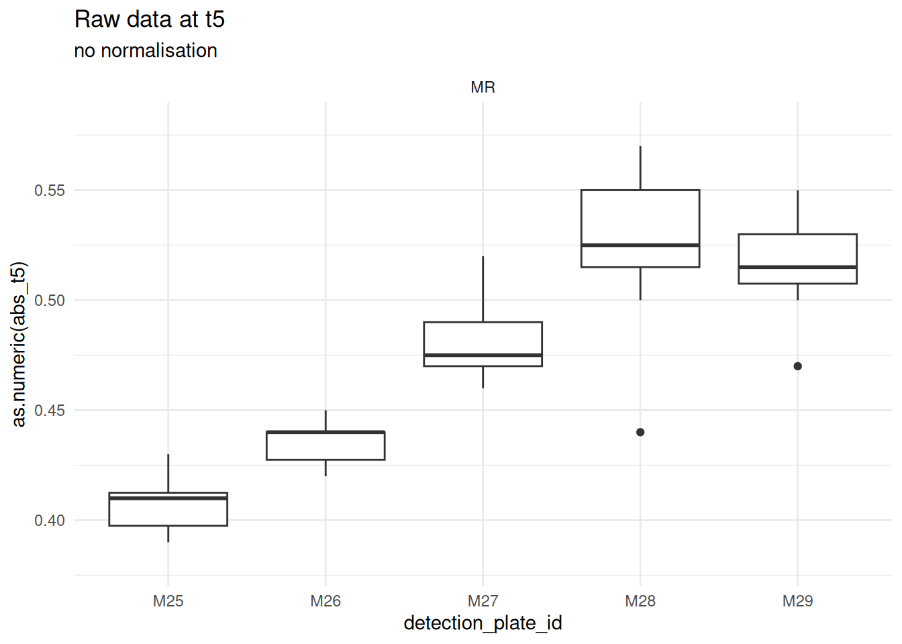
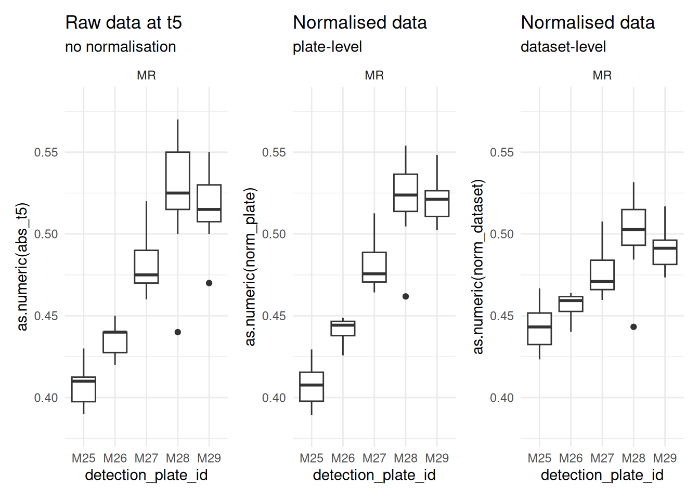
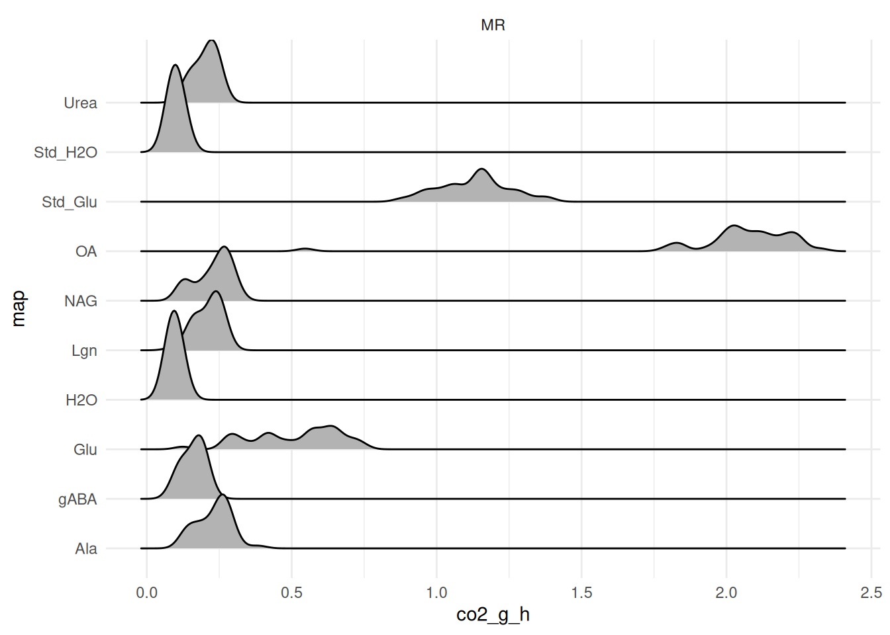
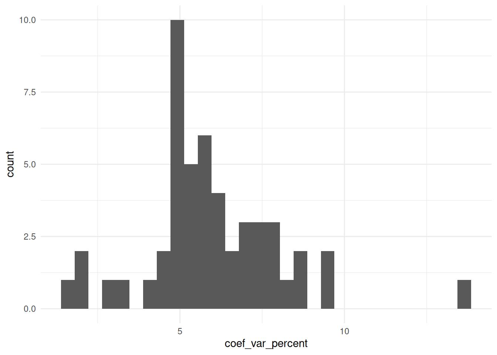

1 - Introduction
This vignette shows a variation of the import pipeline described in vignette("import-tidy", package = "plate2N"), adapted to the case where more than 2 layers of data are recorded for each physical plate (see the tip on multiple data layers in import-tidy).
Here, we quickly go through the import pipeline with an example of data from a MicroResp experiment. To understand what this means: here plates are incubated for 5h. An absorbance reading is done at t = 0h (t0) and t = 5h (t5). There is also mapping data, containing the info on which substrate has been added in which well. Substrates are, in this experiment: glucose (Glu), water (H2O), oxalic acid (OA), lignin (Lgn), N-acetylglucosamine (NAG), gamma-acetylbutyric acid (gABA), alanine (Ala) and urea (Urea).
So, the 3 layers of data are referred to as abs_t0, abs_t5, and map.
More layers of data are possible
in theory, any number of data layers are possible, you just need to extend the logic displayed here, with additional elements to some arguments that are vectors (e.g.,
abs_map = c("abs_t0", "abs_t5", "map")and others that are lists of all data sets (one per layer).
2 - Import and tidy with 2+ layers
2.1 - Importing 2 layers of absorbance data
# Get path to absorbance data, t0 and t5
MR_t0_csv <- system.file("extdata", "MR_abs_t0.csv", package = "plate2N")
MR_t5_csv <- system.file("extdata", "MR_abs_t5.csv", package = "plate2N")
# import from csv file type
MR_abs_t0 <- csv_to_tibble(MR_t0_csv)
MR_abs_t5 <- csv_to_tibble(MR_t5_csv)
# Check them out
MR_abs_t0; MR_abs_t5
#> # A tibble: 45 × 13
#> row X1 X2 X3 X4 X5 X6 X7 X8 X9 X10 X11 X12
#> <chr> <dbl> <dbl> <dbl> <dbl> <dbl> <dbl> <dbl> <dbl> <dbl> <dbl> <dbl> <dbl>
#> 1 P01 1 2 3 4 5 6 7 8 9 10 11 12
#> 2 A 0.93 1.15 1.14 1.14 1.15 1.16 1.16 1.17 1.17 1.12 1.14 1.17
#> 3 B 1.15 1.16 1.13 1.16 1.16 1.16 1.17 1.16 1.14 1.16 1.16 1.15
#> 4 C 1.16 1.15 1.14 1.17 1.15 1.16 1.19 1.19 1.17 1.17 1.18 1.17
#> 5 D 1.17 1.16 1.16 1.16 1.16 1.16 1.18 1.17 1.14 1.18 1.17 1.17
#> 6 E 1.19 1.16 1.16 1.18 1.17 1.15 1.19 1.1 1.11 1.17 1.16 1.16
#> 7 F 1.16 1.17 1.17 1.18 1.19 1.15 1.19 1.13 1.13 1.16 1.14 1.18
#> 8 G 1.17 1.15 1.16 1.13 1.19 1.16 1.2 1.08 1.15 1.16 1.15 1.16
#> 9 H 1.17 1.16 1.17 1.16 1.19 1.16 1.2 1.11 1.15 1.15 1.16 1.18
#> 10 P02 1 2 3 4 5 6 7 8 9 10 11 12
#> # ℹ 35 more rows
#> # A tibble: 45 × 13
#> row X1 X2 X3 X4 X5 X6 X7 X8 X9 X10 X11 X12
#> <chr> <dbl> <dbl> <dbl> <dbl> <dbl> <dbl> <dbl> <dbl> <dbl> <dbl> <dbl> <dbl>
#> 1 P01 1 2 3 4 5 6 7 8 9 10 11 12
#> 2 A 0.67 0.39 0.89 0.91 0.32 0.6 0.77 0.81 0.86 0.67 0.79 0.98
#> 3 B 0.9 0.4 0.86 0.92 0.32 0.64 0.81 0.79 0.83 0.77 0.82 0.94
#> 4 C 0.92 0.42 0.89 0.93 0.33 0.56 0.81 0.8 0.86 0.78 0.84 0.95
#> 5 D 0.92 0.39 0.91 0.91 0.32 0.6 0.81 0.79 0.84 0.81 0.84 0.95
#> 6 E 0.94 0.41 0.9 0.95 0.34 0.59 0.8 0.7 0.8 0.79 0.81 0.95
#> 7 F 0.92 0.41 0.92 0.94 0.36 0.6 0.82 0.77 0.79 0.78 0.8 0.96
#> 8 G 0.93 0.41 0.92 0.89 0.36 0.65 0.83 0.72 0.84 0.76 0.8 0.94
#> 9 H 0.93 0.43 0.92 0.94 0.34 0.62 0.83 0.72 0.83 0.74 0.8 0.96
#> 10 P02 1 2 3 4 5 6 7 8 9 10 11 12
#> # ℹ 35 more rows2.2 - Being creative with importing mappings
In a classical MicroResp experiment, a whole 96-well plate is dedicated to a single sample, though this may vary between experimental design. In this particular case, the mapping did not relate to samples, but to substrates added. And because the template of substrate addition was strictly the same for each plate, with a complete column attributed per substrate, there is a much simpler way to import the mapping data than creating a plate layout csv and importing it. This holds particularly true for an experiment with a large number of plates (we had hundreds). So feel free to be creative in generating layers of data, as best fits your needs.
Plate mapping is strictly the same for each plate throughout the experiment, so we propose to take advantage of the function plate2N::map_plates() (see also the prepare-plates vignette) to create this mapping data in R.
First, create a vector with the names of the substrates (in the order of the plate map)
# vector of substrates
MR_columns <- c(
"Std_Glu", "Std_H2O",
"H2O", "OA", "Glu", "Lgn", "NAG", "gABA", "Ala", "Urea")Then, compute the number of plates required (here, 5 plates) by counting how many cells in the first column of MR_abs_t0 do not correspond to one of the 26 LETTERS (= number of plate ids).
Finally, run the mapping function with
plate_id that pastes “P” with numbers from 01 to the nb of plates
“sample list” = repetition of the vector of substrates x the nb of plates
no std curves or blank (not needed in MicroResp experiments), and 2 empty columns (1 and 12, typically disregarded in those experiments due to large edge effects)
8 wells per “sample” (in this case: not samples but substrates)
# compute the mapping
MR_map <- map_plates(
plate_ids = paste0("P", sprintf("%02d", seq(01:nb_plates))),
samples = rep(MR_columns, nb_plates),
n_samples_per_plate = 10,
column_curves = c(), column_blank = c(), column_empty = c(1,12),
n_wells_samples = 8)
# Check it out
MR_map
#> # A tibble: 45 × 13
#> row X1 X2 X3 X4 X5 X6 X7 X8 X9 X10 X11 X12
#> <chr> <chr> <chr> <chr> <chr> <chr> <chr> <chr> <chr> <chr> <chr> <chr> <chr>
#> 1 P01 1 2 3 4 5 6 7 8 9 10 11 12
#> 2 A empty Std_… Std_… H2O OA Glu Lgn NAG gABA Ala Urea empty
#> 3 B empty Std_… Std_… H2O OA Glu Lgn NAG gABA Ala Urea empty
#> 4 C empty Std_… Std_… H2O OA Glu Lgn NAG gABA Ala Urea empty
#> 5 D empty Std_… Std_… H2O OA Glu Lgn NAG gABA Ala Urea empty
#> 6 E empty Std_… Std_… H2O OA Glu Lgn NAG gABA Ala Urea empty
#> 7 F empty Std_… Std_… H2O OA Glu Lgn NAG gABA Ala Urea empty
#> 8 G empty Std_… Std_… H2O OA Glu Lgn NAG gABA Ala Urea empty
#> 9 H empty Std_… Std_… H2O OA Glu Lgn NAG gABA Ala Urea empty
#> 10 P02 1 2 3 4 5 6 7 8 9 10 11 12
#> # ℹ 35 more rowsSuch creative methods are particularly time-saving with large datasets. Here, we have only 5 plates <=> 45 rows in our tibble. But in a 100-plate dataset, this would correspond to 900 rows, quite time-consuming to encode by hand.
2.3 - Verticalize and join all 3 layers
Notice the use of a 3-element (rather than 2-element) list and a 3-element vector for the arguments tibble_list and abs_map, respectively. The logic stays the same as with 2 layers though.
# verticalize and join the 3 layers
MR_joined <- join_abs_map(
tibble_list = list( MR_abs_t0, MR_abs_t5, MR_map),
abs_map = c("abs_t0-", "abs_t5-", "map-"),
coerce_numeric = FALSE,
dataset = "MR-" )
# Check it out
MR_joined
#> # A tibble: 96 × 17
#> row column `MR-abs_t0-P01` `MR-abs_t0-P02` `MR-abs_t0-P03` `MR-abs_t0-P04`
#> <chr> <chr> <chr> <chr> <chr> <chr>
#> 1 A 1 0.93 1.23 1.27 1.32
#> 2 A 2 1.15 1.23 1.26 1.25
#> 3 A 3 1.14 1.22 1.25 1.22
#> 4 A 4 1.14 1.22 1.26 1.3
#> 5 A 5 1.15 1.22 1.24 1.28
#> 6 A 6 1.16 1.21 1.23 1.26
#> 7 A 7 1.16 1.23 1.23 1.27
#> 8 A 8 1.17 1.2 1.24 1.24
#> 9 A 9 1.17 1.21 1.25 1.28
#> 10 A 10 1.12 1.21 1.25 1.24
#> # ℹ 86 more rows
#> # ℹ 11 more variables: `MR-abs_t0-P05` <chr>, `MR-abs_t5-P01` <chr>,
#> # `MR-abs_t5-P02` <chr>, `MR-abs_t5-P03` <chr>, `MR-abs_t5-P04` <chr>,
#> # `MR-abs_t5-P05` <chr>, `MR-map-P01` <chr>, `MR-map-P02` <chr>,
#> # `MR-map-P03` <chr>, `MR-map-P04` <chr>, `MR-map-P05` <chr>Notice the names of the columns, that now received 3 options for the layer prefix: abs_t0-, abs_t5- and map-.
# Check out column names
names(MR_joined)
#> [1] "row" "column" "MR-abs_t0-P01" "MR-abs_t0-P02"
#> [5] "MR-abs_t0-P03" "MR-abs_t0-P04" "MR-abs_t0-P05" "MR-abs_t5-P01"
#> [9] "MR-abs_t5-P02" "MR-abs_t5-P03" "MR-abs_t5-P04" "MR-abs_t5-P05"
#> [13] "MR-map-P01" "MR-map-P02" "MR-map-P03" "MR-map-P04"
#> [17] "MR-map-P05"2.4 - Tidy the data, 3 columns for 3 layers
Tidy the table to reach 1 row per unique well (96 x nb of physical plates), and 3 important columns: abs_t0, abs_t5, map. The syntax for this step is strictly the same as with 2 layers, but we now have to specify the argument column_def` as its default value, containing only c("abs-", "map-") would no longer work.
# From vertical to tidy format with 3 layers
MR_tidy <- vertical_to_tidy(
MR_joined,
column_def = c("abs_t0", "abs_t5", "map"))
# Check it out
MR_tidy
#> # A tibble: 480 × 9
#> row column well_id unique_well_id dataset plate_id abs_t0 abs_t5 map
#> <chr> <chr> <chr> <chr> <chr> <chr> <chr> <chr> <chr>
#> 1 A 1 A1 A1_P01 MR P01 0.93 0.67 empty
#> 2 A 1 A1 A1_P02 MR P02 1.23 1 empty
#> 3 A 1 A1 A1_P03 MR P03 1.27 1.04 empty
#> 4 A 1 A1 A1_P04 MR P04 1.32 1.09 empty
#> 5 A 1 A1 A1_P05 MR P05 1.32 1.13 empty
#> 6 A 2 A2 A2_P01 MR P01 1.15 0.39 Std_Glu
#> 7 A 2 A2 A2_P02 MR P02 1.23 0.43 Std_Glu
#> 8 A 2 A2 A2_P03 MR P03 1.26 0.47 Std_Glu
#> 9 A 2 A2 A2_P04 MR P04 1.25 0.44 Std_Glu
#> 10 A 2 A2 A2_P05 MR P05 1.25 0.47 Std_Glu
#> # ℹ 470 more rows
# If you like to reorder columns to have mapping first, then absorbance
MR_tidy |> dplyr::relocate(map, .before = abs_t0)
#> # A tibble: 480 × 9
#> row column well_id unique_well_id dataset plate_id map abs_t0 abs_t5
#> <chr> <chr> <chr> <chr> <chr> <chr> <chr> <chr> <chr>
#> 1 A 1 A1 A1_P01 MR P01 empty 0.93 0.67
#> 2 A 1 A1 A1_P02 MR P02 empty 1.23 1
#> 3 A 1 A1 A1_P03 MR P03 empty 1.27 1.04
#> 4 A 1 A1 A1_P04 MR P04 empty 1.32 1.09
#> 5 A 1 A1 A1_P05 MR P05 empty 1.32 1.13
#> 6 A 2 A2 A2_P01 MR P01 Std_Glu 1.15 0.39
#> 7 A 2 A2 A2_P02 MR P02 Std_Glu 1.23 0.43
#> 8 A 2 A2 A2_P03 MR P03 Std_Glu 1.26 0.47
#> 9 A 2 A2 A2_P04 MR P04 Std_Glu 1.25 0.44
#> 10 A 2 A2 A2_P05 MR P05 Std_Glu 1.25 0.47
#> # ℹ 470 more rows°°° ! FROM HERE ON: under development, technically working but not ready yet ! °°°
3 - Join metadata to plate data
# Get path to metadata
metadata_csv <- system.file("extdata", "MR_metadata.csv", package = "plate2N")
# import it
(MR_metadata <- readr::read_csv(metadata_csv, show_col_types = FALSE))
#> # A tibble: 5 × 20
#> plate_nb run_id sample_id plate_id lab_id detection_plate_id expe cra_trial
#> <chr> <chr> <chr> <chr> <chr> <chr> <chr> <chr>
#> 1 P01 R1 t2_102_z1 P01 MdT M25 Field SyCBio
#> 2 P02 R1 t2_103_z3 P02 MdT M26 Field SyCBio
#> 3 P03 R1 t2_86_z2 P03 MdT M27 Field SyCBio
#> 4 P04 R1 t2_101_z3 P04 MdT M28 Field SyCBio
#> 5 P05 R1 t2_84_z1 P05 MdT M29 Field SyCBio
#> # ℹ 12 more variables: sd_c <chr>, soil <chr>, crop_diversity <chr>,
#> # bloc <chr>, sampling_time <chr>, zone <chr>, date <chr>, sample_name <chr>,
#> # soil_dm_content_percent <dbl>, soil_well_g <dbl>,
#> # std_soil_dm_content_percent <dbl>, std_soil_well_g <dbl>Notice the absence of column called std_conc. For the MicroResp experiment, there is no standard curve. However, there is other per-sample data that we will need, namely weight of soil added to each deep-well, and soil water content.
Now we can join it to the plate data
(MR <- MR_tidy |> dplyr::left_join(MR_metadata, by = dplyr::join_by(plate_id)))
#> # A tibble: 480 × 28
#> row column well_id unique_well_id dataset plate_id abs_t0 abs_t5 map
#> <chr> <chr> <chr> <chr> <chr> <chr> <chr> <chr> <chr>
#> 1 A 1 A1 A1_P01 MR P01 0.93 0.67 empty
#> 2 A 1 A1 A1_P02 MR P02 1.23 1 empty
#> 3 A 1 A1 A1_P03 MR P03 1.27 1.04 empty
#> 4 A 1 A1 A1_P04 MR P04 1.32 1.09 empty
#> 5 A 1 A1 A1_P05 MR P05 1.32 1.13 empty
#> 6 A 2 A2 A2_P01 MR P01 1.15 0.39 Std_Glu
#> 7 A 2 A2 A2_P02 MR P02 1.23 0.43 Std_Glu
#> 8 A 2 A2 A2_P03 MR P03 1.26 0.47 Std_Glu
#> 9 A 2 A2 A2_P04 MR P04 1.25 0.44 Std_Glu
#> 10 A 2 A2 A2_P05 MR P05 1.25 0.47 Std_Glu
#> # ℹ 470 more rows
#> # ℹ 19 more variables: plate_nb <chr>, run_id <chr>, sample_id <chr>,
#> # lab_id <chr>, detection_plate_id <chr>, expe <chr>, cra_trial <chr>,
#> # sd_c <chr>, soil <chr>, crop_diversity <chr>, bloc <chr>,
#> # sampling_time <chr>, zone <chr>, date <chr>, sample_name <chr>,
#> # soil_dm_content_percent <dbl>, soil_well_g <dbl>,
#> # std_soil_dm_content_percent <dbl>, std_soil_well_g <dbl>4 - Cleaning the data
4.1 - QC - suspicious wells
plate2N::qc_raw_abs() checks whether absorbance data is within a user-defined range or not. Check the documentation on this function for more details.
Here, we run the quality check to see if there is any really abnormal absorbance reading. The plots are saved in the working environment as objects abs_t0_distrib and abs_t5_distrib, which can be called on later.
–> add a comment about why we choose those thresholds
# Check for t0
MR |>
dplyr::mutate(abs = abs_t0) |>
qc_raw_abs(
min_abs = 0.9, max_abs = 1.5,
plot_col_facet = "dataset",
show_plot = FALSE,
export_plot = "abs_t0_distrib")
#> !! YAY !! All wells are in range for absorbance between 0.9 and 1.5
#> # A tibble: 0 × 5
#> # ℹ 5 variables: dataset <chr>, plate_id <chr>, well_id <chr>, map <chr>,
#> # abs <chr>
# And for t1
MR |>
dplyr::mutate(abs = abs_t5) |>
qc_raw_abs(
min_abs = 0.2, max_abs = 1.5,
plot_col_facet = "dataset",
show_plot = FALSE,
export_plot = "abs_t5_distrib")
#> !! YAY !! All wells are in range for absorbance between 0.2 and 1.5
#> # A tibble: 0 × 5
#> # ℹ 5 variables: dataset <chr>, plate_id <chr>, well_id <chr>, map <chr>,
#> # abs <chr>Good news, all absorbance reads are within expected range. Let’s plot them
(abs_t0_distrib + ggplot2::labs(title = "t0")) /
(abs_t5_distrib + ggplot2::labs(title = "t5")) +
patchwork::plot_annotation(title = "Distribution of raw absorbance")
4.2 - Remove “empty” and NAs
With MicroResp experiments, edge effects are not rare, so we exclude any data from columns 1 and 12 of the 96-well plate. Those have been encoded in the mapping as “empty” (though they were not physically).
We also change data format so that all absorbance data becomes numeric (until now stored as character)
MR_clean <- MR |>
dplyr::filter_out(map == "empty" | is.na(abs_t0)) |>
dplyr::mutate(abs_t0 = as.numeric(abs_t0), abs_t5 = as.numeric(abs_t5))
# notice that there are now less rows (in particulare, it starts with column 1)
MR_clean
#> # A tibble: 400 × 28
#> row column well_id unique_well_id dataset plate_id abs_t0 abs_t5 map
#> <chr> <chr> <chr> <chr> <chr> <chr> <dbl> <dbl> <chr>
#> 1 A 2 A2 A2_P01 MR P01 1.15 0.39 Std_Glu
#> 2 A 2 A2 A2_P02 MR P02 1.23 0.43 Std_Glu
#> 3 A 2 A2 A2_P03 MR P03 1.26 0.47 Std_Glu
#> 4 A 2 A2 A2_P04 MR P04 1.25 0.44 Std_Glu
#> 5 A 2 A2 A2_P05 MR P05 1.25 0.47 Std_Glu
#> 6 A 3 A3 A3_P01 MR P01 1.14 0.89 Std_H2O
#> 7 A 3 A3 A3_P02 MR P02 1.22 0.97 Std_H2O
#> 8 A 3 A3 A3_P03 MR P03 1.25 1.03 Std_H2O
#> 9 A 3 A3 A3_P04 MR P04 1.22 0.96 Std_H2O
#> 10 A 3 A3 A3_P05 MR P05 1.28 1.06 Std_H2O
#> # ℹ 390 more rows
#> # ℹ 19 more variables: plate_nb <chr>, run_id <chr>, sample_id <chr>,
#> # lab_id <chr>, detection_plate_id <chr>, expe <chr>, cra_trial <chr>,
#> # sd_c <chr>, soil <chr>, crop_diversity <chr>, bloc <chr>,
#> # sampling_time <chr>, zone <chr>, date <chr>, sample_name <chr>,
#> # soil_dm_content_percent <dbl>, soil_well_g <dbl>,
#> # std_soil_dm_content_percent <dbl>, std_soil_well_g <dbl>5 - Data transformation
5.1 - Normalisation
In preliminary works we noticed that detection_plate_id was the biggest driver of variability in our dataset. This is due to some lab issues and should not be a recurring problem, but it is a good illustration of the question of “at which scale should we normalize?”. Let’s visualize t0 absorbance readings for standard soils and glucose, supposedly the same between plates (see plot)
unnormed_plot <- MR_clean |>
dplyr::filter(map == "Std_Glu") |>
ggplot2::ggplot(ggplot2::aes(x = detection_plate_id, y = as.numeric(abs_t5))) +
ggplot2::theme_minimal() +
ggplot2::geom_boxplot() +
ggplot2::facet_wrap(~dataset, scales = "free_x") +
ggplot2::labs(title = "Raw data at t5",
subtitle = "no normalisation") +
ggplot2::ylim(0.38,0.58)
unnormed_plot
So, instead of a “per-plate” normalization, we propose a “per-dataset” normalisation. I.e., instead of
We get
MR_norm <- MR_clean |>
# compute dataset-wise mean of t0
dplyr::mutate(mean_t0_dataset = mean(abs_t0)) |>
# compute plate-wise mean of t0
dplyr::mutate(mean_t0_plate = mean(abs_t0), .by = plate_id) |>
# compute both norms: plate-wise and dataset-wise
dplyr::mutate(
norm_plate = mean_t0_plate * abs_t5 / abs_t0,
norm_dataset = mean_t0_dataset * abs_t5 / abs_t0
) |>
# reorder columns to improve readibility
dplyr::relocate(unique_well_id, abs_t0, abs_t5, norm_dataset, norm_plate, mean_t0_plate, mean_t0_dataset)
# Check it out
MR_norm
#> # A tibble: 400 × 32
#> unique_well_id abs_t0 abs_t5 norm_dataset norm_plate mean_t0_plate
#> <chr> <dbl> <dbl> <dbl> <dbl> <dbl>
#> 1 A2_P01 1.15 0.39 0.427 0.393 1.16
#> 2 A2_P02 1.23 0.43 0.440 0.426 1.22
#> 3 A2_P03 1.26 0.47 0.470 0.474 1.27
#> 4 A2_P04 1.25 0.44 0.443 0.462 1.31
#> 5 A2_P05 1.25 0.47 0.473 0.502 1.34
#> 6 A3_P01 1.14 0.89 0.983 0.904 1.16
#> 7 A3_P02 1.22 0.97 1.00 0.968 1.22
#> 8 A3_P03 1.25 1.03 1.04 1.05 1.27
#> 9 A3_P04 1.22 0.96 0.991 1.03 1.31
#> 10 A3_P05 1.28 1.06 1.04 1.11 1.34
#> # ℹ 390 more rows
#> # ℹ 26 more variables: mean_t0_dataset <dbl>, row <chr>, column <chr>,
#> # well_id <chr>, dataset <chr>, plate_id <chr>, map <chr>, plate_nb <chr>,
#> # run_id <chr>, sample_id <chr>, lab_id <chr>, detection_plate_id <chr>,
#> # expe <chr>, cra_trial <chr>, sd_c <chr>, soil <chr>, crop_diversity <chr>,
#> # bloc <chr>, sampling_time <chr>, zone <chr>, date <chr>, sample_name <chr>,
#> # soil_dm_content_percent <dbl>, soil_well_g <dbl>, …Choice of normalisation - graphical
Redo the same plots to confirm the improvement coming from the normalisation, and look at plots with original vs new normalisation
dataset_normed_plot <- MR_norm |>
dplyr::filter(map == "Std_Glu") |>
ggplot2::ggplot(ggplot2::aes(x = detection_plate_id, y = as.numeric(norm_dataset))) +
ggplot2::theme_minimal() +
ggplot2::geom_boxplot() +
ggplot2::facet_wrap(~dataset, scales = "free_x") +
ggplot2::labs(title = "Normalised data", subtitle = "dataset-level") +
ggplot2::ylim(0.38,0.58)
plate_normed_plot <- MR_norm |>
dplyr::filter(map == "Std_Glu") |>
ggplot2::ggplot(ggplot2::aes(x = detection_plate_id, y = as.numeric(norm_plate))) +
ggplot2::theme_minimal() +
ggplot2::geom_boxplot() +
ggplot2::facet_wrap(~dataset, scales = "free_x") +
ggplot2::labs(title = "Normalised data", subtitle = "plate-level") +
ggplot2::ylim(0.38,0.58)
unnormed_plot + plate_normed_plot + dataset_normed_plot
Each step, from raw to plate-level to dataset-level is an improvement on the data. This confirms the proposition, and we keep the dataset-level normalised data for downstream steps
5.2 - Convert to %CO2
Those are the coefficients as given in the MicroResp manual. However, if you are interested in this particular experiment, note that the manual recommends that you calibrate the equation on your own lab material.
%Co2 = -0.2265 + (-1.606)/(1+(-6.771)*norm)
MR_percent_co2 <- MR_norm |>
dplyr::mutate(
percent_co2 = -0.2265 + ((-1.606) / (1 + ((-6.771) * norm_dataset))),
.after = norm_dataset)
# Check it out
MR_percent_co2
#> # A tibble: 400 × 33
#> unique_well_id abs_t0 abs_t5 norm_dataset percent_co2 norm_plate
#> <chr> <dbl> <dbl> <dbl> <dbl> <dbl>
#> 1 A2_P01 1.15 0.39 0.427 0.623 0.393
#> 2 A2_P02 1.23 0.43 0.440 0.584 0.426
#> 3 A2_P03 1.26 0.47 0.470 0.510 0.474
#> 4 A2_P04 1.25 0.44 0.443 0.576 0.462
#> 5 A2_P05 1.25 0.47 0.473 0.502 0.502
#> 6 A3_P01 1.14 0.89 0.983 0.0574 0.904
#> 7 A3_P02 1.22 0.97 1.00 0.0514 0.968
#> 8 A3_P03 1.25 1.03 1.04 0.0400 1.05
#> 9 A3_P04 1.22 0.96 0.991 0.0548 1.03
#> 10 A3_P05 1.28 1.06 1.04 0.0385 1.11
#> # ℹ 390 more rows
#> # ℹ 27 more variables: mean_t0_plate <dbl>, mean_t0_dataset <dbl>, row <chr>,
#> # column <chr>, well_id <chr>, dataset <chr>, plate_id <chr>, map <chr>,
#> # plate_nb <chr>, run_id <chr>, sample_id <chr>, lab_id <chr>,
#> # detection_plate_id <chr>, expe <chr>, cra_trial <chr>, sd_c <chr>,
#> # soil <chr>, crop_diversity <chr>, bloc <chr>, sampling_time <chr>,
#> # zone <chr>, date <chr>, sample_name <chr>, soil_dm_content_percent <dbl>, …5.3 - Convert to µg CO2-C / g dry soil / h
!! TODO: this is taken from Excel document –> check again in Manual that it is the right version
co2_emitted = (((percent_co2/100)x850x(44/22.4)x(12/44)x(273/(273+25)))/(soil_per_well_gx(soil_dw/100)))/5
MR_co2_g_h <- MR_percent_co2 |>
dplyr::mutate(
co2_g_h = (
((percent_co2 / 100) * 850 * (44/22.4) * (12/44) * (273 / (273+25))) /
dplyr::case_when(
# for std soils
column %in% c(2,3) ~
(std_soil_well_g * (std_soil_dm_content_percent / 100)),
column %in% c(4:11) ~
(soil_well_g * (soil_dm_content_percent / 100)))
) / 5
)
MR_co2_g_h
#> # A tibble: 400 × 34
#> unique_well_id abs_t0 abs_t5 norm_dataset percent_co2 norm_plate
#> <chr> <dbl> <dbl> <dbl> <dbl> <dbl>
#> 1 A2_P01 1.15 0.39 0.427 0.623 0.393
#> 2 A2_P02 1.23 0.43 0.440 0.584 0.426
#> 3 A2_P03 1.26 0.47 0.470 0.510 0.474
#> 4 A2_P04 1.25 0.44 0.443 0.576 0.462
#> 5 A2_P05 1.25 0.47 0.473 0.502 0.502
#> 6 A3_P01 1.14 0.89 0.983 0.0574 0.904
#> 7 A3_P02 1.22 0.97 1.00 0.0514 0.968
#> 8 A3_P03 1.25 1.03 1.04 0.0400 1.05
#> 9 A3_P04 1.22 0.96 0.991 0.0548 1.03
#> 10 A3_P05 1.28 1.06 1.04 0.0385 1.11
#> # ℹ 390 more rows
#> # ℹ 28 more variables: mean_t0_plate <dbl>, mean_t0_dataset <dbl>, row <chr>,
#> # column <chr>, well_id <chr>, dataset <chr>, plate_id <chr>, map <chr>,
#> # plate_nb <chr>, run_id <chr>, sample_id <chr>, lab_id <chr>,
#> # detection_plate_id <chr>, expe <chr>, cra_trial <chr>, sd_c <chr>,
#> # soil <chr>, crop_diversity <chr>, bloc <chr>, sampling_time <chr>,
#> # zone <chr>, date <chr>, sample_name <chr>, soil_dm_content_percent <dbl>, …Check-out value distribution
MR_co2_g_h |>
ggplot2::ggplot(ggplot2::aes(x = co2_g_h)) +
ggplot2::theme_minimal() +
ggridges::geom_density_ridges(ggplot2::aes(y = map)) +
ggplot2::facet_wrap(~dataset)
#> Picking joint bandwidth of 0.0288
6 - Per plate & per substrate outlier removal
6.1 - Compute preliminary average (pre-outlier removal)
!! A preliminary run of the following chunks (up to saving the plots) showed that while they are not the only outliers, wells from row A and H are outliers on many plates, possibly a majority of plates. So I choose to follow the recommendation of our colleagues from the FiBL and remove those wells already in the subset hereunder, before computation of the average. If needed, just “comment” the filtering line to check out plots with all data again.
We then compute coefficient of variation which will serve as a threshold to identify potential outliers
MR_avg_prelim <- MR_co2_g_h |>
dplyr::filter_out(row %in% c("A", "H")) |>
dplyr::group_by(dataset, plate_id, map) |>
dplyr::summarize(
substrate_avg = mean(co2_g_h),
std_dev = stats::sd(co2_g_h)
) |>
dplyr::mutate(coef_var_percent = 100 * std_dev / substrate_avg) |>
dplyr::arrange(desc(coef_var_percent))Check out the distribution of the coefficient of variation
MR_avg_prelim |> ggplot2::ggplot(ggplot2::aes(x = coef_var_percent)) +
ggplot2::theme_minimal() +
ggplot2::geom_histogram() 
We have higher values than with the N-dosage pipeline, which is expected with this experiment: there are many sources of noise.
With a large data set, we set a threshold of 10-15%, i.e., data where the coefficient of variation is under the threshold will not be checked. Here we have a small data set and for the sake of showing the principle of outlier removal, we will set a somewhat stricter threshold at 8%
suspicious_substrates <- MR_avg_prelim |>
dplyr::filter(abs(coef_var_percent) > 8) |>
dplyr::select(dataset, plate_id, map) |> unique()
suspicious_MR <- MR_co2_g_h |>
dplyr::filter_out(row %in% c("A", "H")) |>
dplyr::right_join(suspicious_substrates, by = dplyr::join_by(dataset, plate_id, map)) Now, with a threshold of 8% as max coef of variation, we are left with only 6 combinations of plate x substrate to look at (instead of 50).